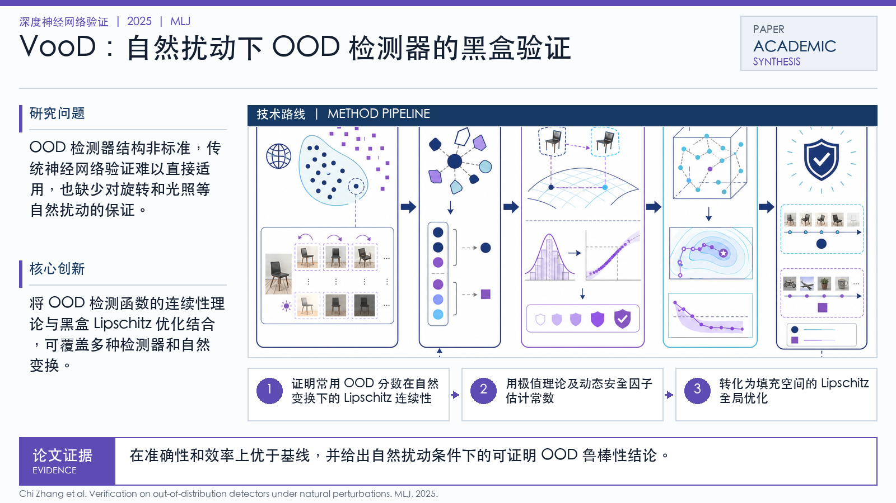

Problem
解决的问题
OOD 检测器结构非标准，传统神经网络验证难以直接适用，也缺少对旋转和光照等自然扰动的保证。
Verification on DNNs · 2025 · MLJ
Verification on out-of-distribution detectors under natural perturbations
Problem
OOD 检测器结构非标准，传统神经网络验证难以直接适用，也缺少对旋转和光照等自然扰动的保证。
Value
在准确性和效率上优于基线，并给出自然扰动条件下的可证明 OOD 鲁棒性结论。
Paper-grounded Academic Summary
该代表页依据原文摘要、贡献段与方法图注生成。方法视觉由 ImageGen 按论文证据逐篇绘制，中文研究问题、技术路线、创新点与实验结论采用确定性排版，以保证内容与字符准确。
打开原文 PDF
Technical Route
Innovation